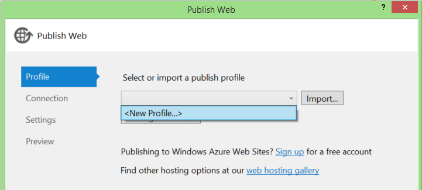
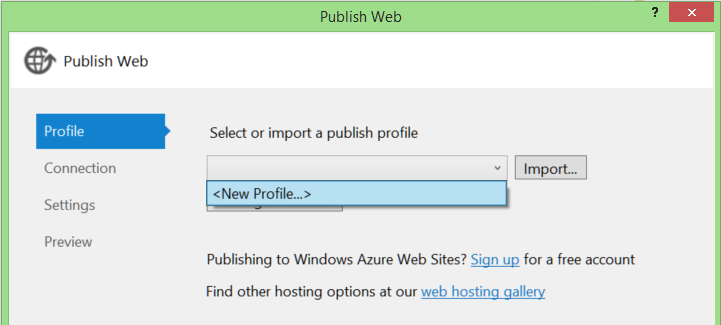
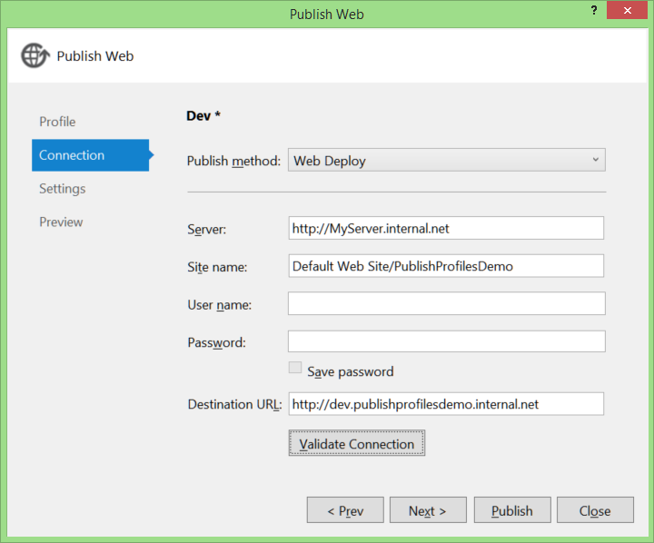
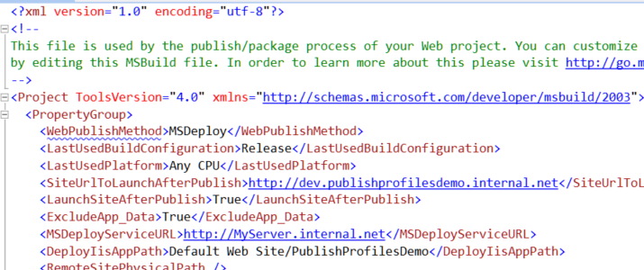
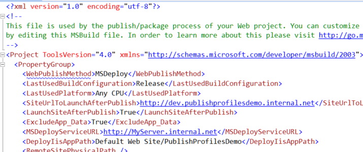

Deployment used to be a big hassle. Copy/Paste to UNC folder paths. XCopy in the command line. Batch scripts to string them together. Error prone, brittle, and annoying.
Deployment has evolved, but I've found a lot of people don't know about Publish Profiles or what they can do these days, so here we go.
There is a lot of shiny goodness to be had in publish profiles, including publishing web site projects, publishsettings files from hosting providers, and more, which I may cover in future posts. For now, here's a quick introduction to creating profiles. For the purposes of this post, I'll assume you want to use Web Deploy.
Create a new profile
I've got a vanilla File > New... > Project web application project. You can get to the publish dialog from the Build menu...
 or the project context menu...
or the project context menu...
 Which gets you access to the Publish dialog. We're going to start by creating a new publish profile, called "Dev".

Which gets you access to the Publish dialog. We're going to start by creating a new publish profile, called "Dev".

Add connection details
 For a complete breakdown of the options on this screen, see the references section below. I've selected "Web Deploy" and plugged in the relevant server/site details.
Settings
In the settings section you can select build configuration and publish options. Note that you can also configure Entity Framework Code First Migrations and connection string replacement here. We'll come back to that in a future post.

Preview/Publish
The Preview tab gives allows you to (optionally) see what would happen if you ran the deployment without changing anything. This is a good way to not only verify the settings, but see exactly what files the deployment sees as needing an update.
 From here you can also click "Publish" to deploy, or "Close" will prompt you to save the profile.
From here you can also click "Publish" to deploy, or "Close" will prompt you to save the profile.
Project Changes
So what did all this do to your project? If you expand the Properties folder, you'll see a new "PublishProfiles" folder.
 If you open up that "Dev.pubxml" file, you'll find ordinary XML.

If you're accustomed to MSBuild project syntax, that XML will look familiar.
If you open up that "Dev.pubxml" file, you'll find ordinary XML.

If you're accustomed to MSBuild project syntax, that XML will look familiar.
Including the publish files in the project means it can be source controlled and everyone uses the same settings. Another dev pulling down this project will have the "Dev" publish settings already setup.
Web Publish Series
- Config transformations
- Publishing Web Site Projects
- Automatic deployment with TFS Team Build
- Set up your web server for web deployment.
- Using publishsettings files to publish to Azure (and other hosting providers)